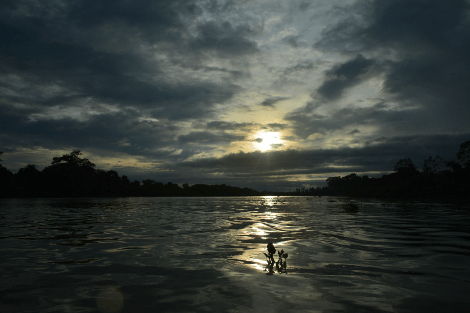

Neymar Jr
Neymar da Silva Santos Júnior, known as Neymar, is a Brazilian professional footballer who plays as a forward.

Lionel Messi
Lionel Andrés Messi is an Argentine professional footballer who plays as a forward or an attacking midfielder.

Cristiano Ronaldo
Cristiano Ronaldo dos Santos Aveiro GOIH ComM is a Portuguese professional footballer who plays as a forward

Paulo Dybala
Paulo Exequiel Dybala is an Argentine professional footballer who plays as a forward for Serie A club Juventus

Mesut Ozil
Mesut Özil is a German professional footballer who plays as an attacking midfielder for Süper Lig club Fenerbahçe.

Mauro Icardi
Mauro Emanuel Icardi is an Argentine professional footballer who plays as a striker for Ligue 1.

Angel Di Maria
Ángel Fabián Di María is an Argentine professional footballer who plays for Ligue 1 club Paris Saint-Germain.

Kylian Mbappé
Kylian Mbappé Lottin is a French professional footballer who plays as a forward for Ligue 1.

Mohamed Salah
Mohamed Salah Hamed Mahrous Ghaly is an Egyptian professional footballer who plays as a forward.

Harry Kane
Harry Edward Kane MBE is an English professional footballer who plays as a striker for Premier League.

Kevin De Bruyne
Kevin De Bruyne is a Belgian professional footballer who plays as a midfielder for Premier League club Manchester City.

Philippe Coutinho
Philippe Coutinho is a Brazilian professional footballer who plays as an attacking midfielder.
All Highlights
Copa America 2021
Highlights for Children, often referred to simply as Highlights, is an American children's magazine. It began publication in June 1946.

Copa America Groups :
Group A

Argentina

Bolivia

Chile

Paraguay

Uruguay
Group B

Brazil

Colombia

Ecuador

Peru

Venezuela
Copa America Hosts :
01. Brasília

Founded in 1960 as the capital of Brazil and located in the middle of the country, Brasilia may not have a long history but the city is like an open-air museum. The capital was planned and developed by iconic architects Oscar Niemeyer and Lúcio Costa and is filled with fine works by these great figures.
02. Goiânia

Close to Brasília, about 200km from the country's capital, is Goiânia. One of the largest cities in the interior of Brazil and the capital of the state of Goiás, Goiânia is a true power of national agricultural production.
03. Cuiabá
One of the great natural wonders of Brazil is the Pantanal, a flooded plain that extends from Bolivia to Paraguay, which is home to an immense diversity of fauna and flora. Close to this natural wonder is the city of Cuiabá, capital of the state of Mato Grosso, where games will be played during the CONMEBOL Copa América 2021 at Arena Pantanal.
04. Rio de Janeiro

"Marvelous City". The nickname by which Rio de Janeiro is known by says it all. Rio is one of the most impressive vacation spots in Brazil and the world. In addition to a lot of samba, beaches and leisure, Rio and its hospitable people also eat, breath, and live football.